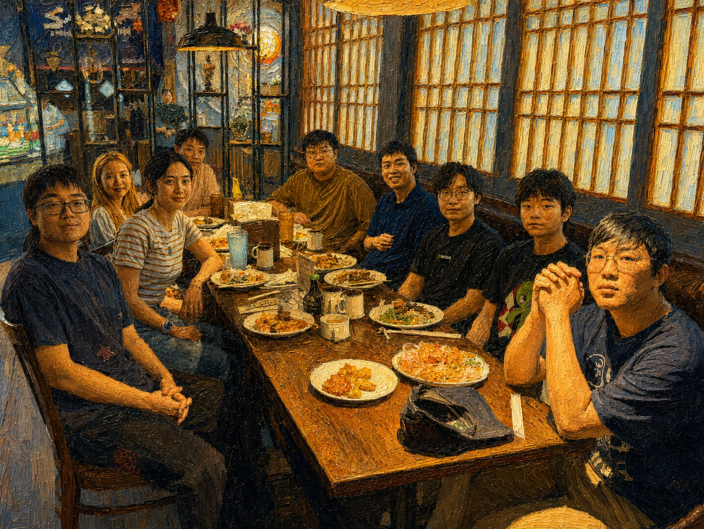

PhD Students
- Boxuan Zhang, 2025 Fall -
- Yihao Quan, 2025 Fall -
- Zeru Shi, 2025 Fall -
- Yuefei Chen, Co-advised with Dr. Xiaodong Lin, Spring 2025 -
- Qiyuan Shi, 2026 Fall -
Master Students
- Yanshu Li, 2025 Spring - (will join UT Austin as a PhD student in 2026)
Undergraduate Students
- Rui Wu, 2024 Fall -
- Yanchuan Tang, 2025 Spring - (will join Harvard as a Master student in 2026)
Alumni
- Taowen Wang (2024 Fall - 2025 Spring), Master Student, Now CS PhD at the University of Hong Kong
- Huaizhi Ge (2024 Fall - 2025 Spring), Master Student, Now CS PhD at Stevens Institute of Technology
- Weidi Luo (2024 Fall - 2025 Spring), Undergraduate Student, Now CS PhD at University of Georgia
- Qipan Xu (2024 Fall - 2025 Spring), Master Student, Now CS PhD at the University of Tennessee
